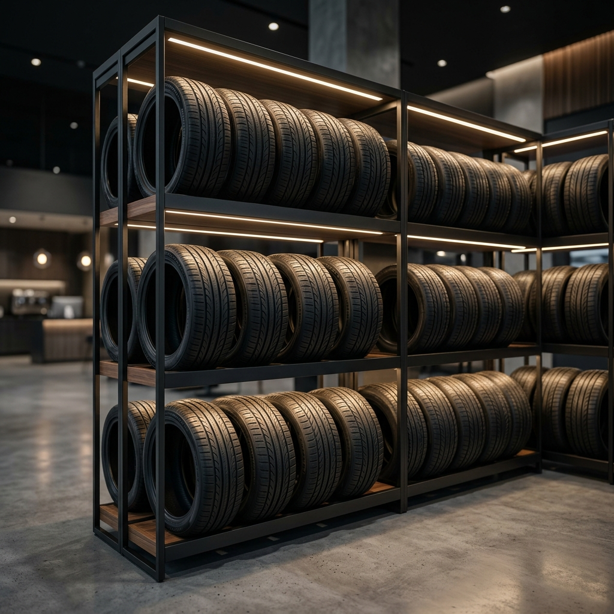
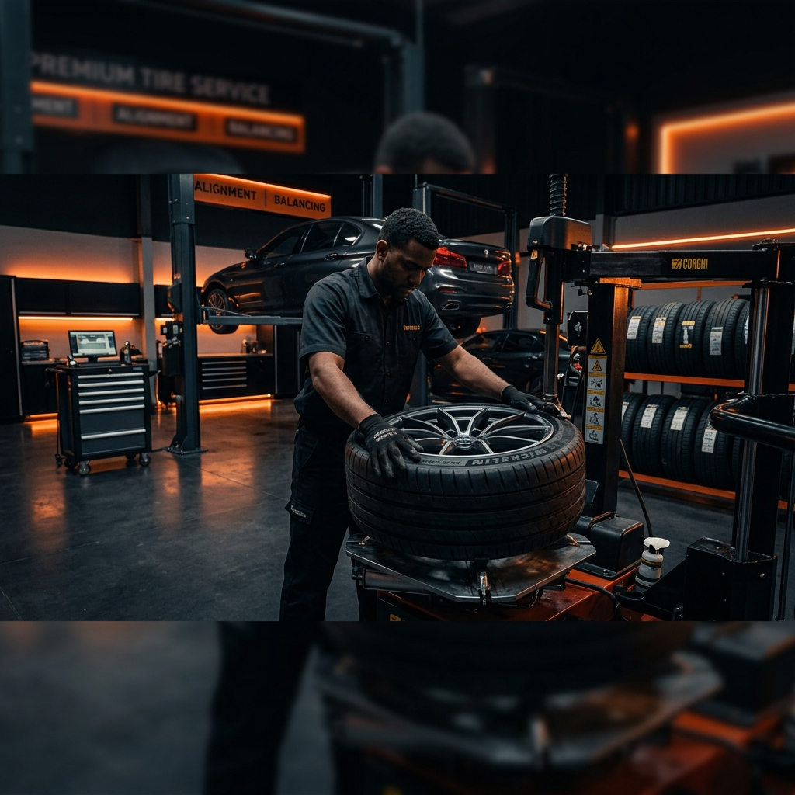
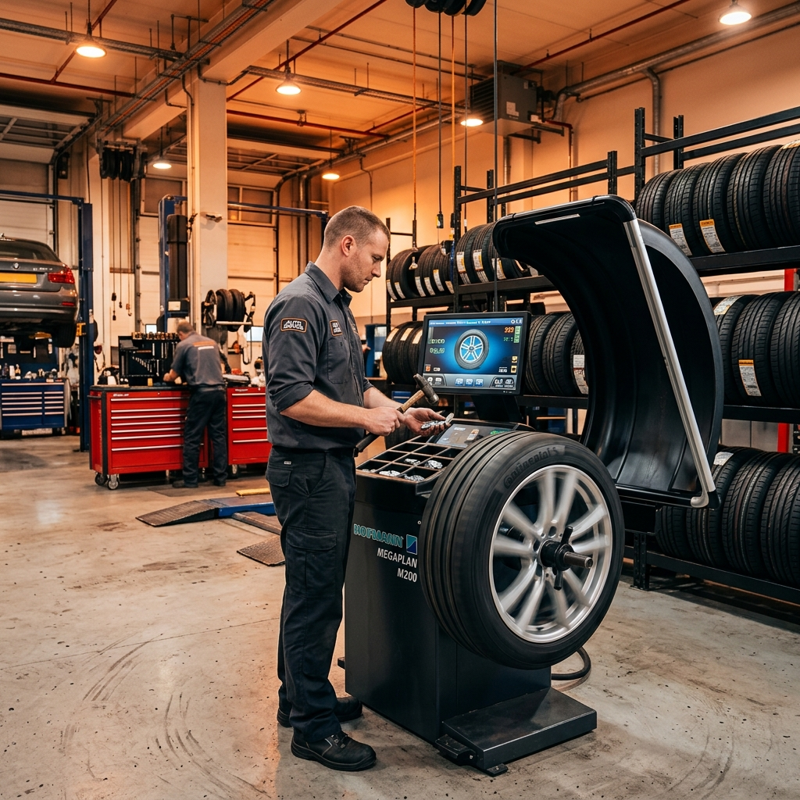
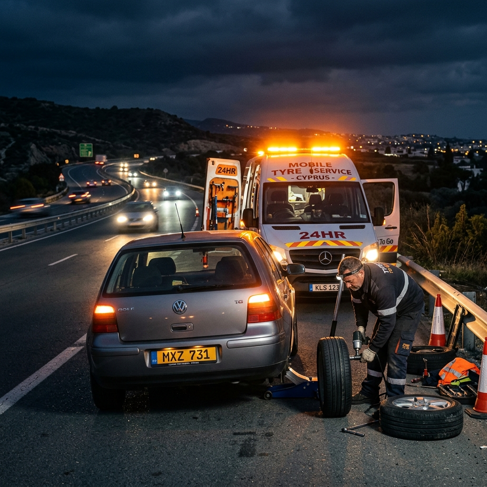

Lastik Değişimi
Her marka ve model araç için profesyonel lastik sökme-takma ve montaj işlemleri. Hızlı ve güvenli lastik değişimi hizmeti.
Profesyonel ekibimizle lastik değişimi, balans ayarı, rot ayarı, jant düzeltme ve 7/24 mobil yol yardımı hizmetleri sunuyoruz. Girne ve çevresinde güvenilir lastik çözümleri.
Girne ve çevresinde araç lastik ihtiyaçlarınız için kapsamlı çözümler sunuyoruz.
Her marka ve model araç için profesyonel lastik sökme-takma ve montaj işlemleri. Hızlı ve güvenli lastik değişimi hizmeti.
Son teknoloji balans makineleriyle hassas tekerlek dengeleme. Titreşimsiz, konforlu ve güvenli bir sürüş deneyimi sağlıyoruz.
Bilgisayarlı rot ayar sistemiyle tekerleklerinizi ideal açılara getiriyoruz. Düzgün lastik aşınması ve doğru direksiyon hakimiyeti.
Eğilmiş, çarpılmış veya hasar görmüş jantlarınız için profesyonel jant düzeltme ve onarım hizmeti.
Yolda kaldığınızda Girne ve çevresinde 7/24 mobil lastik servisi ile anında yanınızdayız. Yerinde lastik değişimi ve tamiri.
Michelin, Bridgestone, Pirelli, Continental, Goodyear gibi dünya markalarının orijinal lastiklerini uygun fiyatlarla sunuyoruz.

15 yılı aşkın süredir Girne ve Kuzey Kıbrıs genelinde profesyonel lastik hizmetleri sunuyoruz. Deneyimli ekibimiz ve modern ekipmanlarımızla araçlarınız için en iyi lastik çözümlerini sağlıyoruz.
Müşteri memnuniyetini ön planda tutan yaklaşımımızla fark yaratıyoruz.
Bekleme sürenizi minimumda tutarak aracınızı kısa sürede teslim ediyoruz.
Kaliteli hizmeti en uygun fiyatlarla sunuyoruz. Fiyat-performans garantisi.
Alanında uzman, sertifikalı teknisyenlerimizle güvenilir hizmet.
Gece gündüz, hafta sonu dahil kesintisiz lastik servisi.

Lastik Montaj
Balans Ayarı
Mobil Yol YardımıStandart bir lastik değişimi işlemi ortalama 20-30 dakika sürmektedir. Acil durumlarda daha hızlı işlem yapılabilmektedir.
Balans ayarı tekerlek ağırlık dengesini sağlarken, rot ayarı tekerleklerin açısal pozisyonunu düzenler. Her ikisi de güvenli sürüş için önemlidir.
Evet, Girne merkez ve çevre bölgeler dahil Alsancak, Lapta, Çatalköy, Karaoğlanoğlu, Ozanköy ve Bellapais'e mobil servis sunmaktayız.
Michelin, Bridgestone, Pirelli, Continental, Goodyear, Hankook, Yokohama, Dunlop, Lassa ve Petlas gibi dünya markalarının ürünlerini sunuyoruz.
Evet, küçük delikler ve çivi batmaları gibi hasarlarda lastik tamiri yapıyoruz. Ancak yan duvar hasarlarında güvenlik gereği yeni lastik öneriyoruz.
Girne ve çevresinde 7/24 profesyonel lastik servisi için bize ulaşın. Hızlı, güvenilir ve uygun fiyatlı çözümler sunuyoruz.